중앙은행이 돈을 저렇게 찍어내는데 왜 인플레가 없는가? - Ray Dalio의 설명
게시: 2020-04-23T06:30:43+09:00
이번 편은 제 글이 아니라 세계에서 가장 큰 규모의 헷지펀드의 운용자인 Ray Dalio가 만든 "How the Economic Machine Works" 라는 30분짜리 유튜브 비디오 클립을, 시간이 없으신 분들을 위해 대략 중요 부분만 오려 붙이고 설명을 단 것입니다.
이 비디오는 2013년에 나왔는데, 아마 이미 많은 분들이 다 보신 내용일 것이고 또 무척 간단하면서도 단순화된 내용이라서 전문가들이 볼 내용은 아닙니다. 그래도 저같은 경알못에게는 무엇보다 "중앙은행들이 이렇게 돈을 마구 찍어내는데 왜 인플레가 일어나지 않는가"라는 질문에 대해 (적어도 제게는) 이해하기 쉬운 답을 주었습니다. 실제로는 이 비디오가 설명하는 것처럼 그렇게까지 단순하지는 않을 겁니다. 또 2020년 요즘의 경제 상황을 설명하기 위해 레이 달리오가 이 비디오를 만든 것도 아닙니다. 저는 아는 것이 부족하여 복잡한 설명은 못드리니, 좀더 좋은 답은 각자 더 공부해보시기 바랍니다.
3줄 요약하면 이렇습니다.
- 원래 시중의 돈이라는 것은 진짜 돈보다 신용, 즉 빚이 훨씬 더 (약 16배 이상) 많다.
- 경기 순환은 신용이 확장되고 위축됨에 따라 발생한다.
- 불경기는 신용이 경색되어 빚이 줄어들기 때문에 발생하는데, 중앙은행이 찍어내는 지폐는 그렇게 신용이 위축되면서 줄어든 돈을 채워넣는데 사용된다.
아래 유튜브에서 원본을 그대로 보시기를 권합니다. 영어 자막 나옵니다.

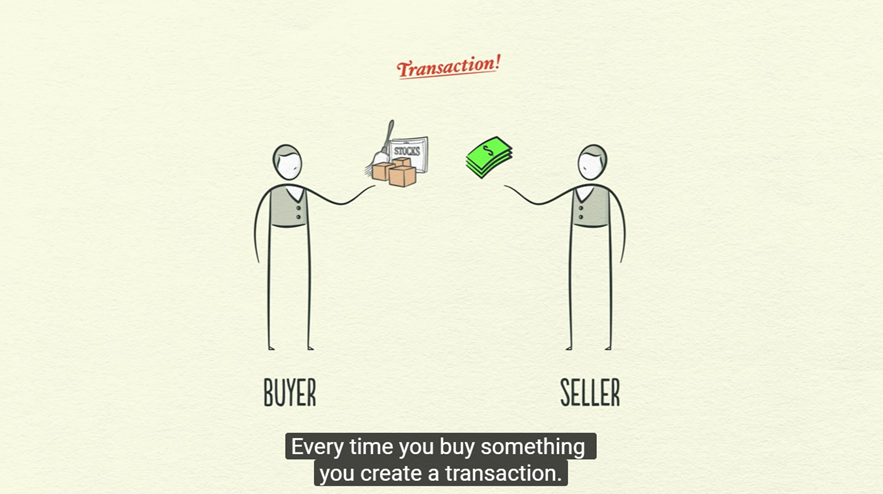
경제 활동의 기본 요소는 '거래'입니다.
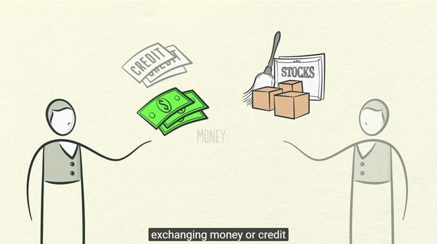
물건이든 서비스든 돈을 내고 사는 것이 바로 거래입니다.
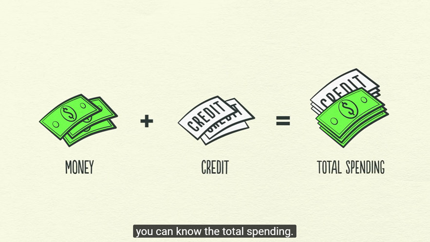
이때 거래에 사용되는 돈은 사실 진짜 현금만 의미하지는 않고 신용(=대출), 즉 빚도 포함합니다. 그러니까 신용을 내서 쓰면 그 신용만큼 소비가 증가하게 됩니다.
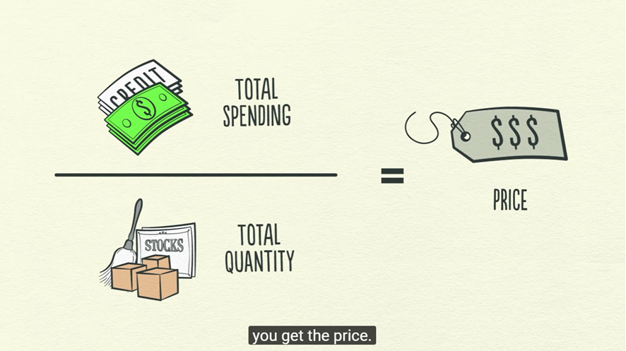
가격이란 것은 결국 서비스나 상품에 사용한 돈의 양에 의해 결정되는 것인데, 그 돈에 신용이 추가되면 그만큼 가격도 올라갑니다.
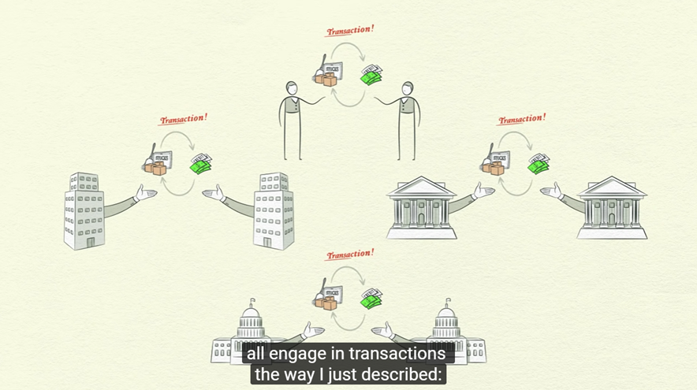
사회를 구성하는 모든 주체, 즉 개인이나 회사, 정부 등이 모두 거래를 하며 경제활동을 합니다.
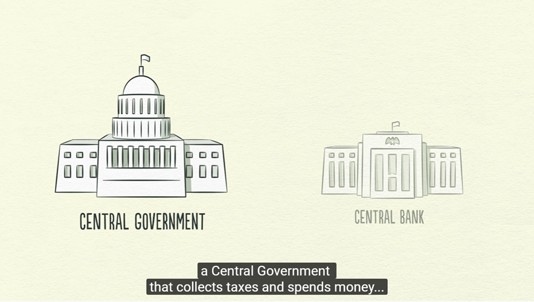
그 중에서도 중앙정부와 중앙은행은 매우 독특하고도 중요한 역할을 하는데, 일단 중앙정부는 세금을 걷고 그렇게 걷은 돈을 써서 경제가 돌아가게 합니다.
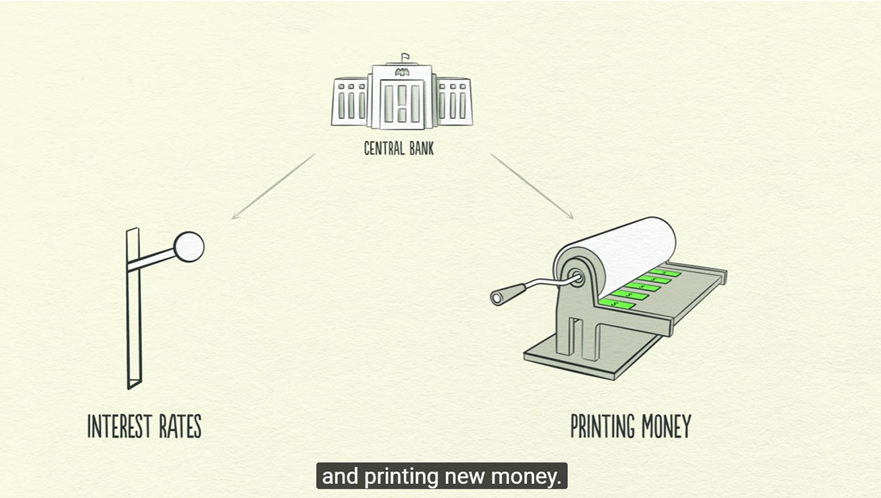
중앙은행은 더욱 중요한 역할, 즉 돈의 양을 조절하는 일을 합니다. 중앙은행을 이를 위해 2가지 수단을 쓰는데, 그 2가지란 이자율을 조절과 새로운 돈을 찍어내는 것입니다.
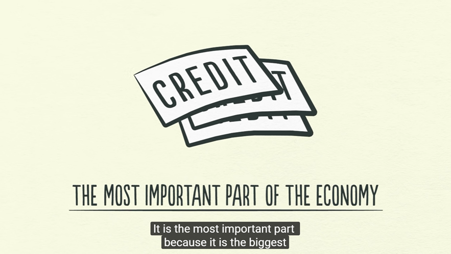
돈보다는 오히려 신용이 경제에 있어서는 훨씬 더 중요한 역할을 합니다. 이유는 신용이 돈보다 양이 훨씬 많고 또 변동성이 매우 심하기 때문입니다.
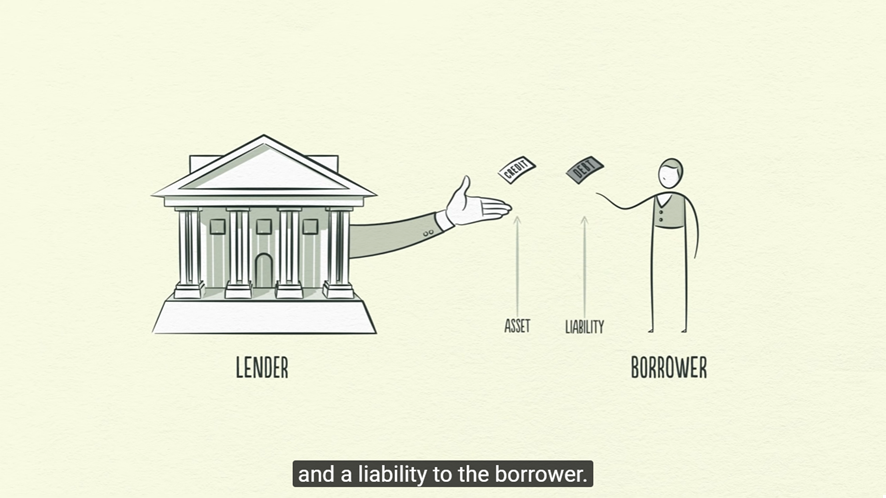
신용이란 보는 관점에 따라 2가지 이름으로 불립니다. 빌려준 사람 입장에서는 채권, 즉 자산이 되고 빌리는 사람 입장에서는 채무, 즉 빚이 됩니다.
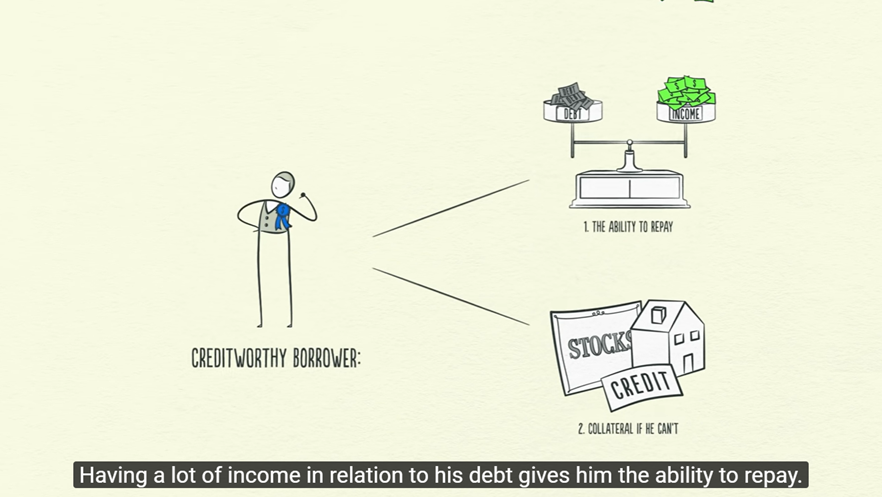
신용이 좋은 대출자가 되려면 2가지 자질 중 적어도 하나를 가지고 있어야 합니다. 그 2가지 자질이란 소득이 좋아서 갚을 능력이 좋든가, 아니면 상당한 가치의 부동산이나 유가증권 등이 있어서 든든한 담보를 제공할 수 있어야 합니다.
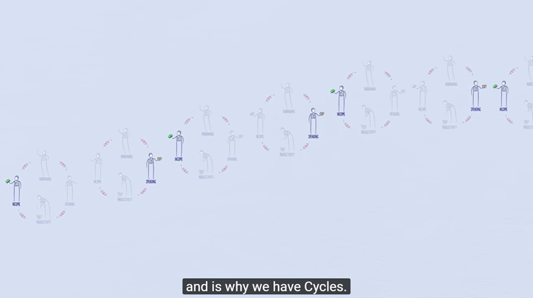
A라는 사람의 소비는 B라는 사람의 소득이 됩니다. 그런데 B라는 사람의 소득이 좋아지면 그 소득에 덧붙여 더 많은 신용을 창출할 수 있고, 더 많은 소비를 할 수 있게 됩니다. 그렇게 늘어난 소비는 다시 C라는 사람의 소득이 됩니다. 그 C의 소득이 좋아지므로 C도 더 많은 신용을 내서 더 많은 소비를 할 수 있게 되고, 그는 다시 D라는 사람의 소득이 됩니다. 이렇게 선순환을 하며 경기가 활황으로 갑니다.
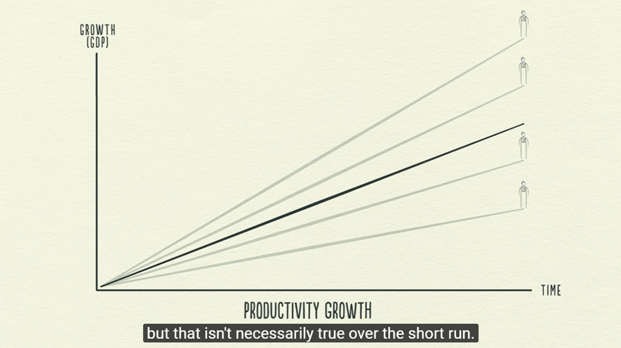
성장, 즉 GDP는 각 경제 주체의 생산성에 달려 있습니다. 그리고 생산성이란 그다지 변동이 심하지 않기 때문에 원래는 완만한 성장만 가능합니다.
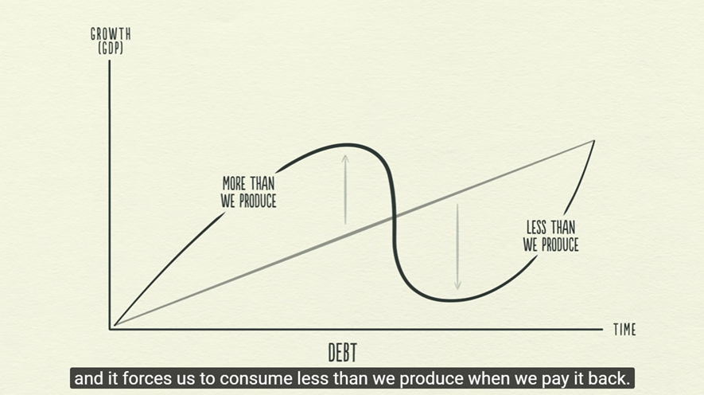
그러나 신용이 개입하면 이야기가 달라집니다. 빚을 내어 소비를 하면 생산성보다 더 높은 성장이 가능합니다. 그러나 결국 빚은 갚아야 하므로, 빚을 갚을 때는 생산성보다 더 낮은 성장을 하게 됩니다. 이것이 바로 경기 순환입니다.
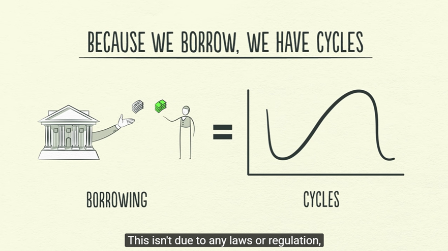
결국 주기적으로 경기 활황과 경기 침체가 오는 것은 신용 때문입니다.
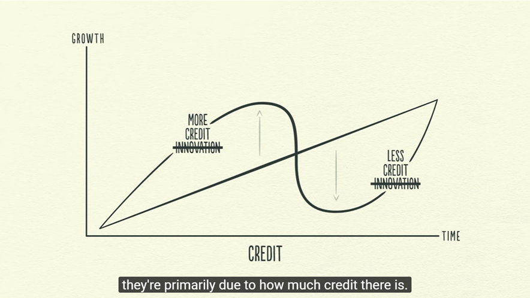
원래 성장은 기술 혁신 등 생산성 향상에 의해서만 일어나지만, 단기간으로 보면 그런 혁신보다는 신용을 많이 낼 수 있느냐 없느냐에 달려 있습니다.
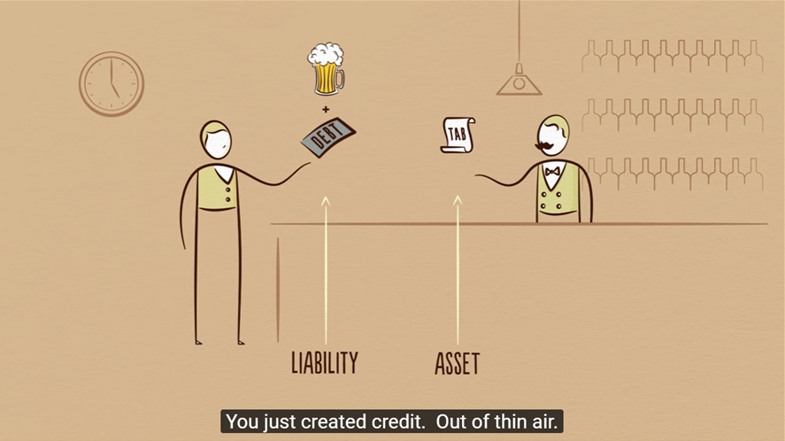
신용은 매우 쉽게 창출될 수 있습니다. 가령 맥주집에서 맥주 1잔을 사는 경우를 생각해보십시요. 원래는 돈을 내고 맥주 1잔을 받으면 거래가 성립됩니다. 그러나 돈이 없더라도, 맥주집 주인이 손님을 믿고 외상 장부에 간단히 기입만 한 뒤 맥주 1잔을 내주면 거래가 성립됩니다. 이때 손님은 채무를, 맥주집 주인은 채권을 가지게 됩니다. 이건 어떻게 보면 허공에서 돈을 만들어낸 것과 동일한 효과입니다.
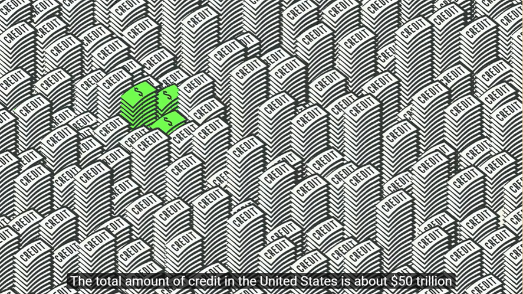
이런 신용은 그 양에 있어서 진짜 돈을 압도합니다. (2013년 기준으로) 미국 내의 총 신용액은 50조 달러에 달합니다.
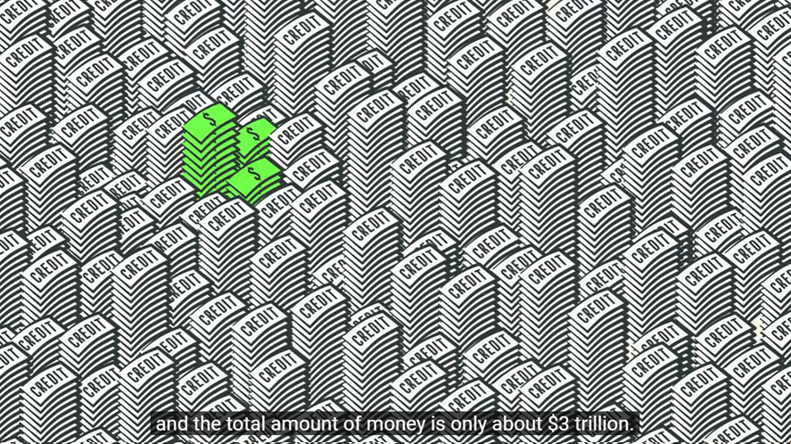
그에 비해 실제 돈의 액수는 고작 3조 달러에 불과합니다.
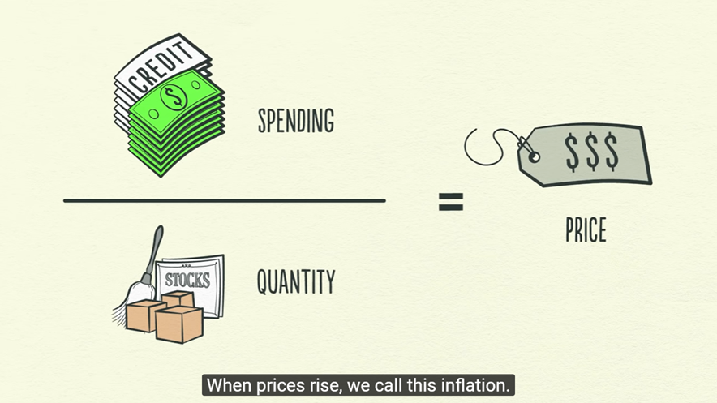
위에서도 언급했듯이, 가격이란 어떤 상품과 서비스에 대해 사용된 총금액을 그 상품과 서비스의 양으로 나눈 것입니다. 따라서 소비에 신용이 더해지면 분자가 늘어나므로 가격은 올라가게 됩니다. 이것을 인플레이션이라고 부릅니다.
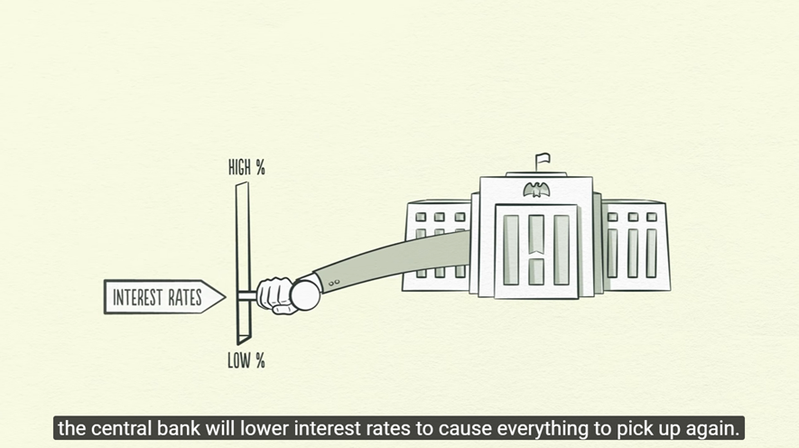
인플레이션이 지나치면 많은 문제가 생깁니다. 그래서 중앙은행은 인플레이션이 심하다 싶으면 그걸 조절하기 위해 이자율을 높입니다. 그러면 신용을 내는 비용이 높아지기 때문에 신용의 총액이 줄어들게 됩니다.
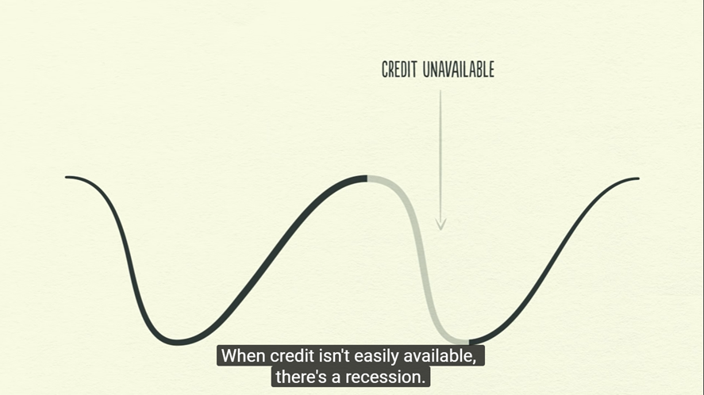
신용으로 쌓아올린 성장은 신용이 줄어들면 축소됩니다. 이자율이 올라서 신용 액수가 줄어들면 사람들이 소비를 줄이기 때문입니다. 그래서 신용을 쉽게 얻을 수 없게 되면 불황이 찾아옵니다.
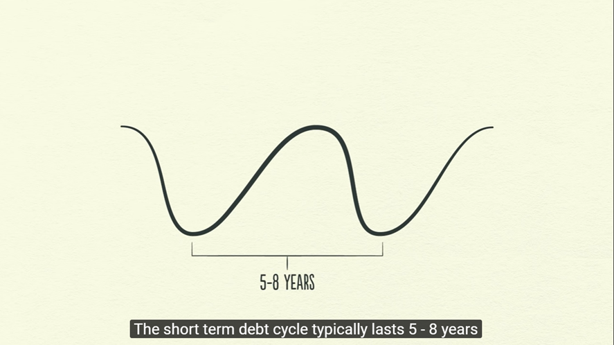
이런 신용에 의한 단기 경기 순환은 보통 5~8년 정도의 주기로 일어납니다.
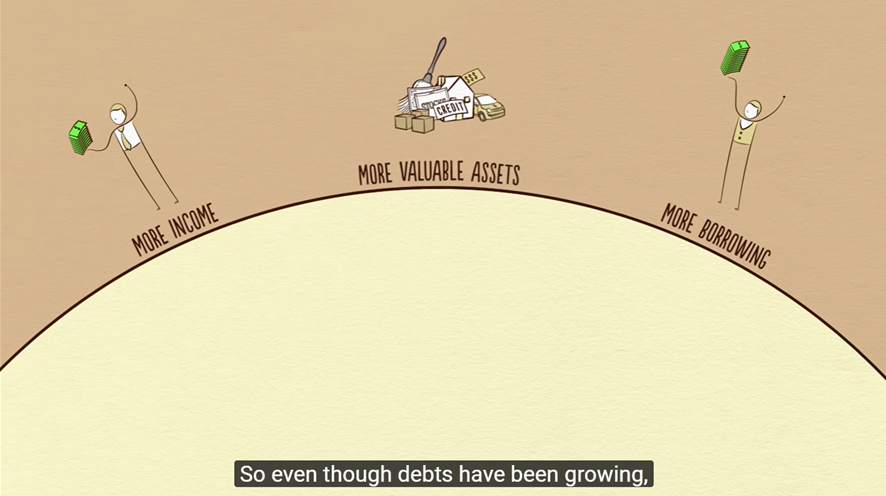
그런데 장기적으로 보면 이런 단기 순환이 끝날 때마다 빚은 완전히 청산되지 않고 일부가 남아 있게 되는데, 단기 순환이 누적되면서 그런 누적 빚의 규모는 점점 더 커집니다. 빚이 쌓인다는 것은 소득이 더 늘고 자산의 가치도 커지며 그 덕분에 더 많은 빚을 낼 수 있다는 것입니다. 그런 경기 순환이 계속 되면 결국 풍선이 부풀 듯이 경제에 거품이 끼게 되고, 언젠가는 그 거품이 터지게 됩니다.
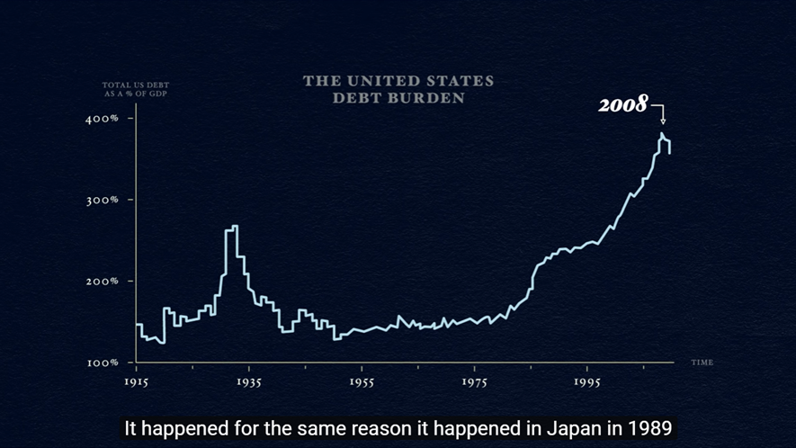
가장 최근에 터진 거품은 2008년 미국의 금융 위기였습니다. 그건 기본적으로는 1989년 일본에서 벌어진 거품 붕괴, 1929년에 일어난 대공황 시대 거품 붕괴와 똑같은 일이었습니다.
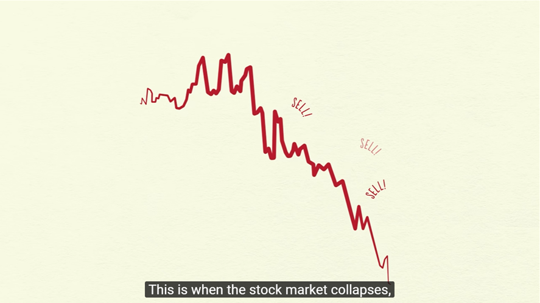
이렇게 거품이 터지면 쌓여있던 신용이 삽시간에 줄어들고 은행이 빚의 상환을 요구하기 때문에, 사람들은 빚을 갚기 위해 주식이나 부동산 등 자산을 팔기 시작합니다. 그러나 많은 사람들이 한꺼번에 자산을 팔면 자산의 가치가 떨어지고, 빚을 내기 어렵기 때문에 그 자산을 사려는 사람도 줄어들게 됩니다. 그래서 자산 가치는 더 빨리 떨어집니다.
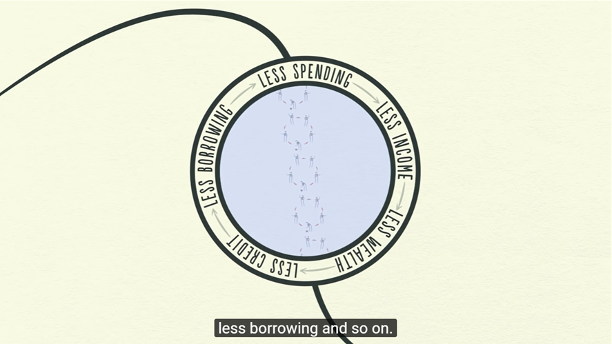
자산이 줄어들기 때문에 사람들은 소비를 줄이게 되고, 소비가 줄어들기 때문에 다른 사람들의 소득도 줄어듭니다. 이런 악순환이 계속 되면서 경제는 심각하게 수축됩니다.
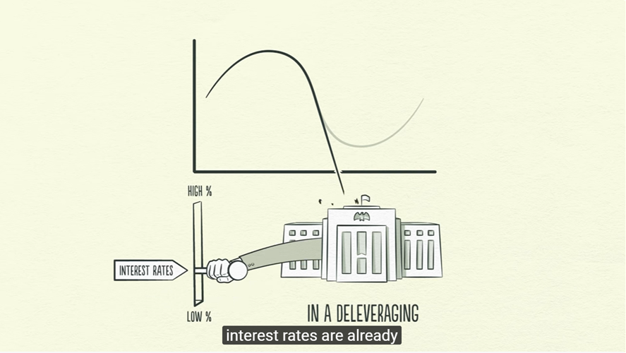
이렇게 경기가 침체되면 중앙은행은 경기를 살리기 위해 이자율을 내립니다. 그런데, 이미 이자율을 0%에 가까울 정도로 내린 상태라면 추가로 더 쓸 수 있는 방법이 별로 없게 됩니다.
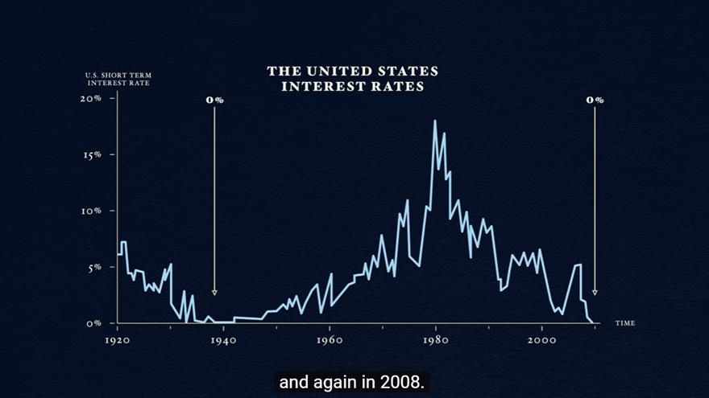
그게 1930년대 미국 대공황 시기의 상태였습니다. 그리고 2008년의 금융 위기 때도 그랬고요.
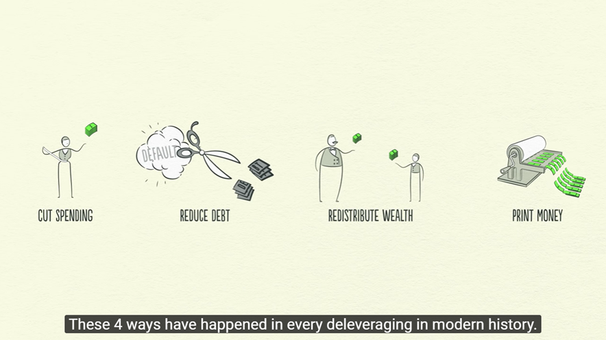
신용이 축소되면서 경기가 침체에 빠질 때는 항상 4가지 현상이 일어났습니다. 소비 감소, 부채 감축, 부의 재분배, 그리고 새로 돈을 찍는 것입니다.
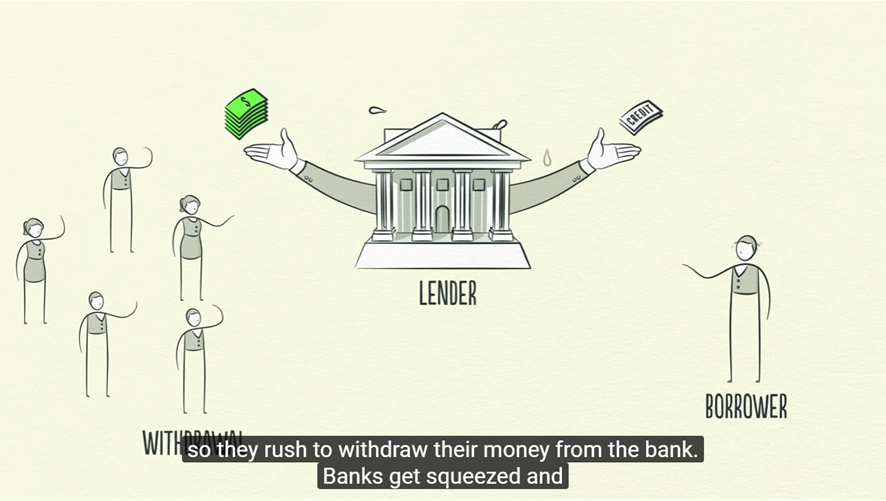
경기가 침체에 빠지면 가장 먼저 사람들은 소비를 줄이고 빚을 갚으려 합니다. 하지만 소비가 줄면 경기가 더욱 침체되며 많은 사람들이 실직을 하게 되고 전체적인 소득이 줄어듭니다. 자산 가치는 더 떨어지게 됩니다. 즉 디플레이션에 빠지게 됩니다. 소득이 줄어든 채무자가 은행 빚을 갚지 못하게 되고, 불안해진 예금자들은 은행으로 달려가 예금을 인출하려 합니다. 은행은 그런 인출 요구를 충족시키기 위해 기존의 멀쩡한 대출까지도 회수하려 하게 됩니다. 이런 과정을 거쳐서 대출, 즉 신용이 점점 줄어들게 됩니다.
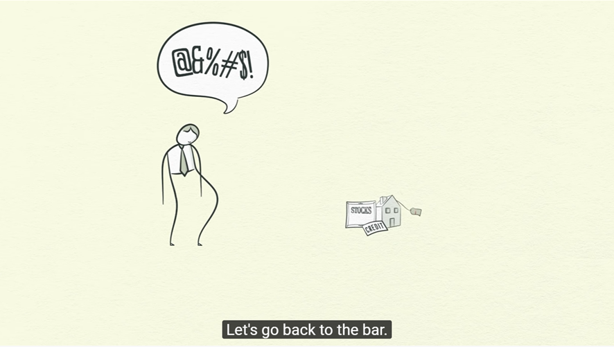
이렇게 신용이 극적으로 줄어들면 자산 가치도 폭락하면서 결국 경제 공황에 빠지게 됩니다.
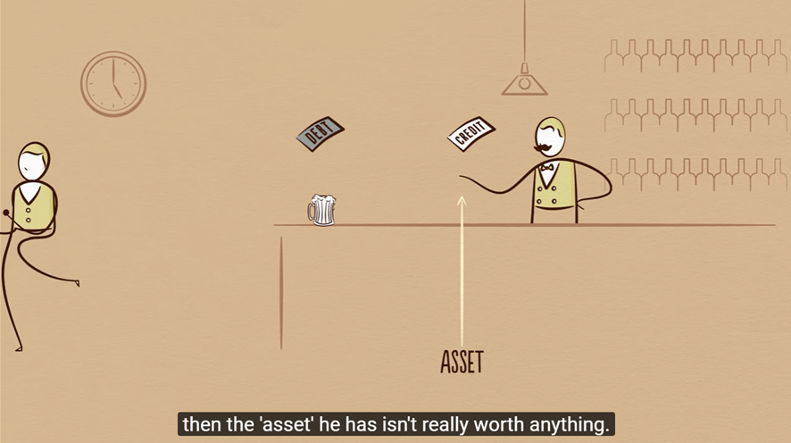
아까의 맥주집의 외상 장부를 생각해보십시요. 아까 손님과의 좋은 신용 관계 덕분에 허공에서 신용이 창출되었지만, 이제 손님이 돈이 없어 외상을 갚지 않고 도망쳐버리면 외상 장부라는 자산은 갑자기 아무런 가치가 없는 휴지조각이 되어버립니다.
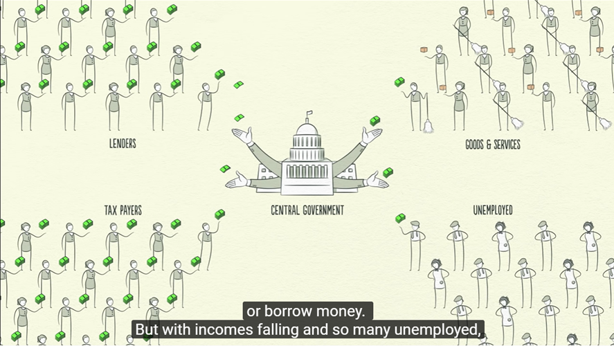
이렇게 경기가 불황에 빠지면 사람들이 직장을 잃습니다. 정부는 이들에게 실업 수당을 지급하고 공공 서비스에 사람을 채용하고 또 정부 조달을 통해 상품을 사들이며 경제에 활력을 불어넣으려 합니다. 이 돈은 세금을 걷어서 충당하기도 하지만 경기 침체 때문에 세금도 줄어듭니다. 결국 정부는 빚을 내어 충당해야 합니다.
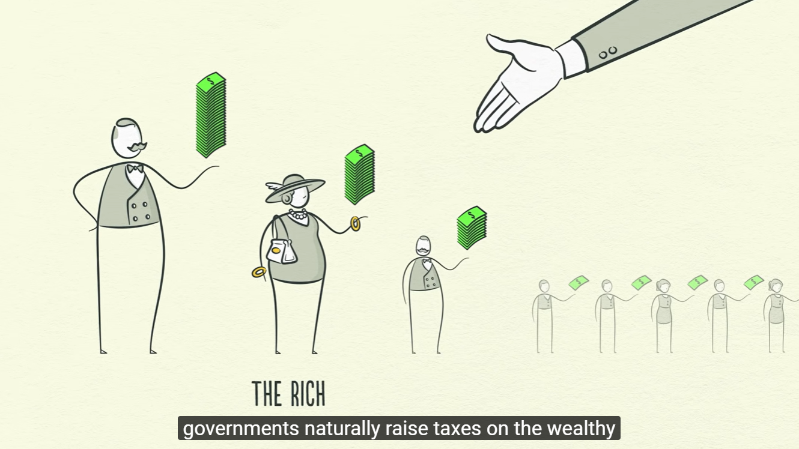
그렇게 정부가 빌린 돈도 갚아야 하는데 그 돈은 결국 어디에서 올까요 ? 부자들입니다. 정부는 자연스럽게 세금을 올려서 부자들로부터 돈을 걷어 지출을 하게 되는데, 그건 결과적으로 부의 재분배를 낳게 됩니다.
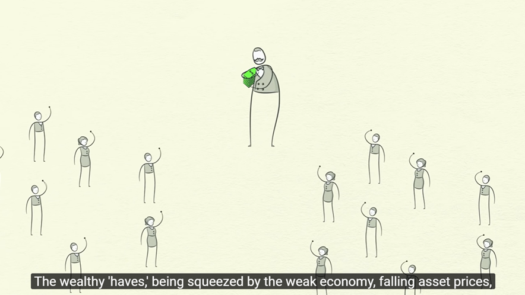
생활이 어려워진 가난한 사람들은 여전히 잘먹고 잘사는 돈 많은 부자들에 대해 감정이 나빠집니다. 부자들도 이때 경기 침체로 인해 자산이 줄어든 데다가 가난한 사람들을 먹여살리기 위해 국가가 세금으로 돈을 더 뜯어가기 때문에 가난한 서민들을 증오하게 됩니다.
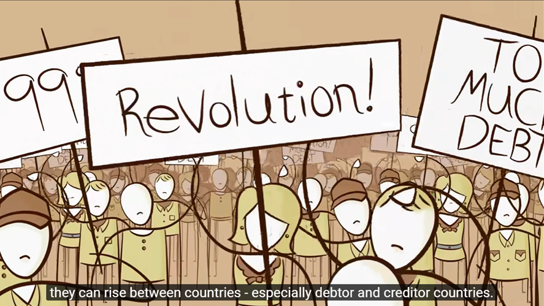
그래서 불황 때는 사회정치적인 소요가 일어나기 쉽습니다. 이런 갈등은 국가 내의 사회 계급 간에도 발생하지만 채권-채무 관계에 따라 국가 간에도 발생할 수 있습니다.
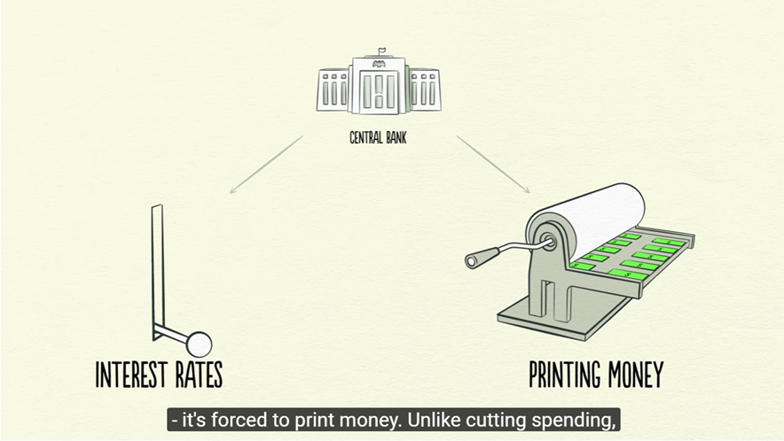
이 모든 문제는 신용이 경색되면서 일어난 것입니다. 신용이 줄어드는 것은 결국 시중에 유통되는 돈이 줄어드는 것입니다. 결국 신용이나 돈을 늘리기 위해서는 이자율을 낮추거나 돈을 더 찍어내야 하는데, 이자율을 낮추는 것은 이미 다 써버렸으니, 결국 정부는 돈을 더 찍어내게 됩니다.
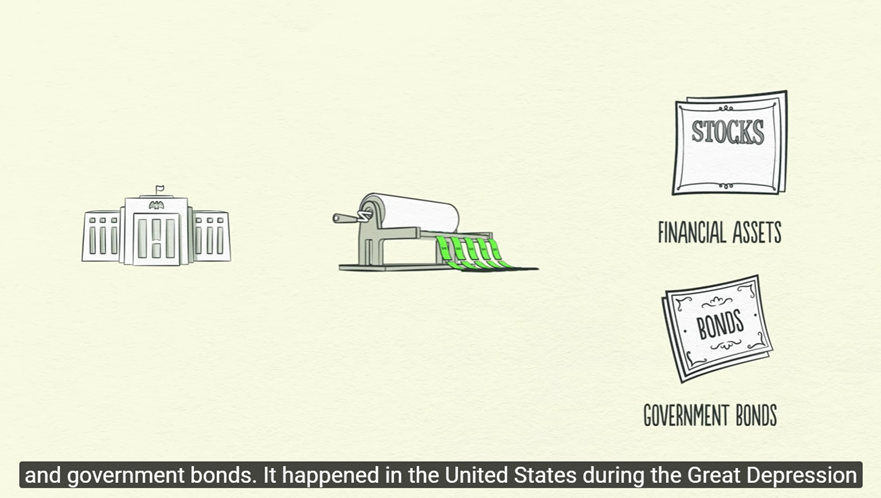
중앙은행은 이렇게 찍어낸 돈으로 국공채나 기타 금융 자산을 매입합니다. 이런 방식으로 시중에 돈을 푸는 일은 1930년대 대공황 때도 있었고 2008년 금융 위기 때도 있었습니다.
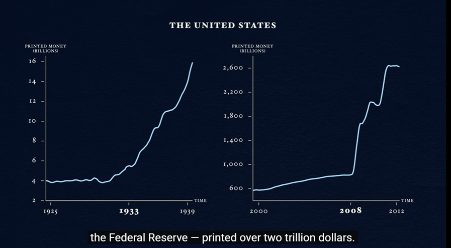
금융 위기 때는 미국 중앙은행은 2조 달러가 넘는 돈을 찍어냈습니다.
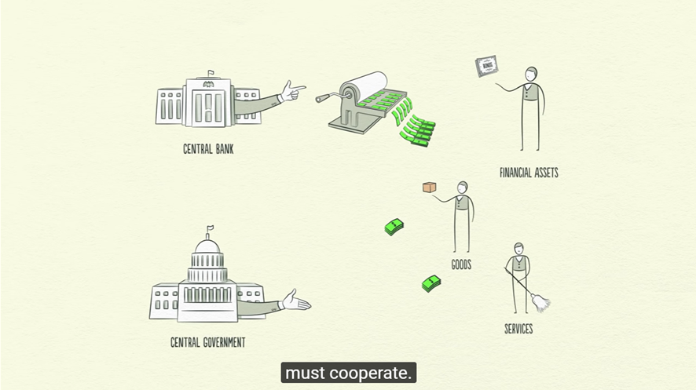
중앙은행이 돈을 찍어내어 금융 자산을 사들이는 것은 자산 가치를 높여주므로 신용 경색을 풀어주는 효과를 냅니다. 그러나 그건 이미 금융 자산을 가지고 있는 부자들에게나 도움이 됩니다. 금융 자산만 사들일 수 있는 중앙은행에 비해 정부는 서비스와 상품을 직접 사들이거나 실업급여를 지급함으로써 서민들의 손에 직접 돈을 쥐어줄 수 있습니다. 중앙은행이 국공채와 같은 금융 자산을 사들이는 것은 실질적으로는 정부에게 돈을 꿔주는 효과를 냅니다. 따라서 경제 위기를 헤쳐나가기 위해서는 중앙은행과 정부가 긴밀하게 협조해야 합니다. 결국 중앙은행이 돈을 찍어내는 것은 시장에서 사라진 신용의 빈자리를 채워넣는 것이라고 볼 수 있습니다.
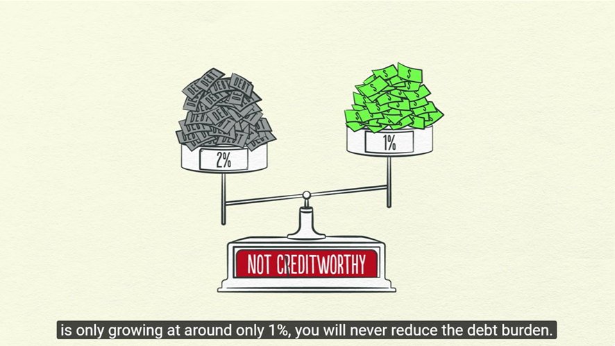
중앙은행과 정부는 인플레이션과 디플레이션의 균형도 잘 조절해야 하지만, 그 과정에서 빚의 증가 속도가 소득의 증가 속도보다 더 빨라지는 일이 없도록 잘 제어해야 합니다.
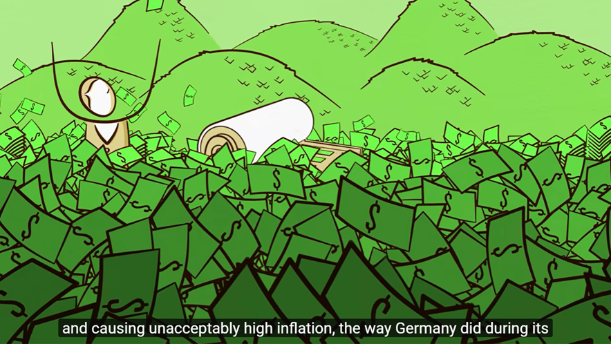
어떻게 생각하면 빚의 증가 속도보다 소득의 증가 속도를 더 빠르게 하는 가장 쉬운 방법은 빚의 증가 속도, 즉 금리 이상의 비율로 돈을 찍어내는 것입니다. 그러나 이렇게 돈을 찍어내는 쉬운 방법에 탐닉하게 되면 결국 통제 불가의 인플레이션을 일으키게 됩니다. 제2차 세계대전 직전의 독일처럼요.
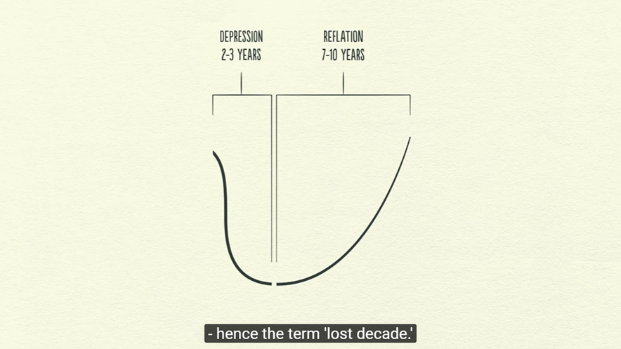
보통 이렇게 경기가 침체에 빠졌다가 다시 활황으로 돌아오는데는 불황 2~3년, 활황 7~10년의 시간이 걸립니다.
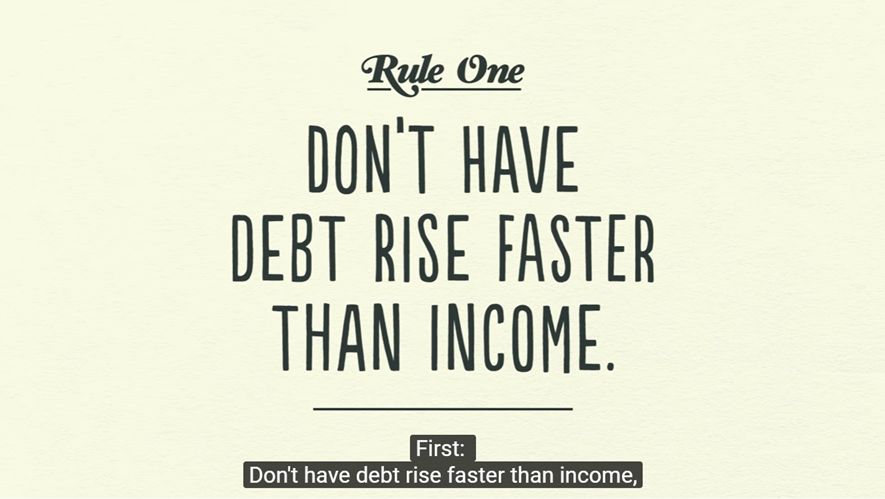
결국 경제를 잘 운용하기 위해서는 3가지 룰을 명심해야 합니다. 룰 1번은 소득보다 빚이 더 빨리 늘어나게 내버려 두면 안된다는 것입니다.
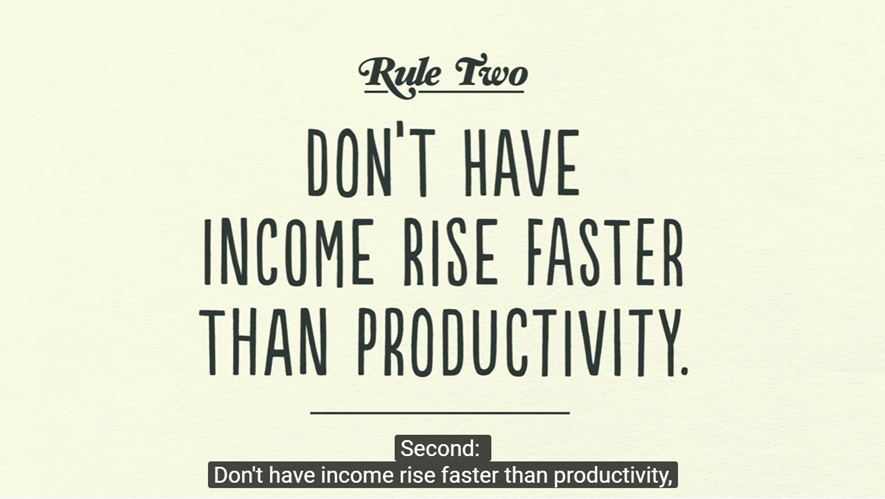
룰 2번은 소득이 생산성보다 더 빨리 늘어나게 해서도 안된다는 것입니다.
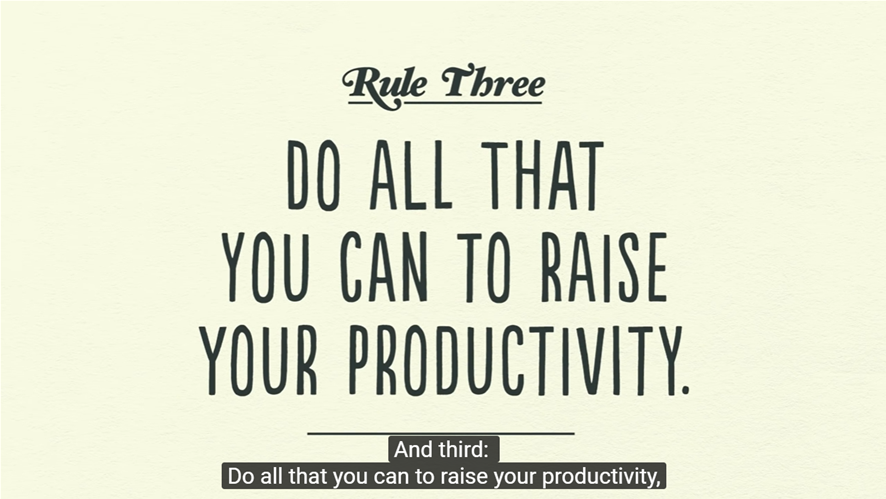
룰 3번은 생산성을 높이기 위해 최선을 다하라는 것입니다. 그래야 소득이 건전하게 늘어나니까요.